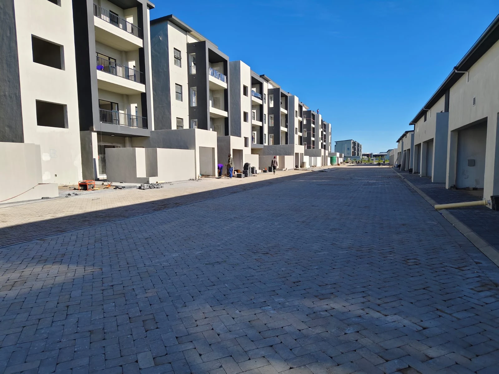
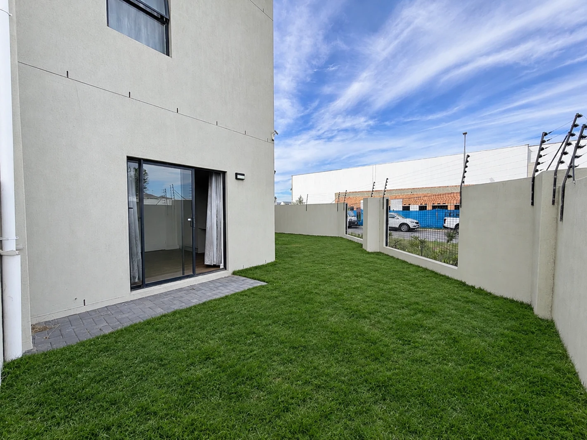

OUR DEVELOPMENTS. OUR STORY.
Great places.
Built from
the ground up.
Before the first key turns, every detail matters.
Scroll to see a place come to life.
Sandown · A construction visualisation
Groundwork: excavators, a backhoe loader and a tipper truck prepare the full Knightswood Estate site.
Our vision.
Our developments.
Our commitment.
We develop and build our own residential projects, from the first groundwork to the finishing details.
Based in Parklands, KIS Construction brings its own developments to life. Our work brings planning, construction and finishing together, with a focus on the homes and neighbourhoods we create.
Discover Knightswood EstateA KIS CONSTRUCTION PROJECT
Knightswood
Estate.
Six apartment blocks. Sixteen duplex homes. One connected estate in Sandown. Cream façades, charcoal frames and sheltered balconies define a neighbourhood built around its private internal road.
- LOCATION
- 66 Candlewood Crescent, Sandown
- TYPE
- Apartments & duplex homes
- ESTATE
- Blocks A–F & 16 duplex homes


Explore the estate layout
Estate arrangement traced from the published first-floor plan. View the architectural plan
KIS CONSTRUCTION
Places to live.
A story to share.
Developing and building our own residential projects.
Based in Parklands, Cape Town.
Parklands, Table View, 7441
KIZ Construction cc t/a KIS Construction
Construction sequence: illustrative reconstruction based on published plans and reference photographs.